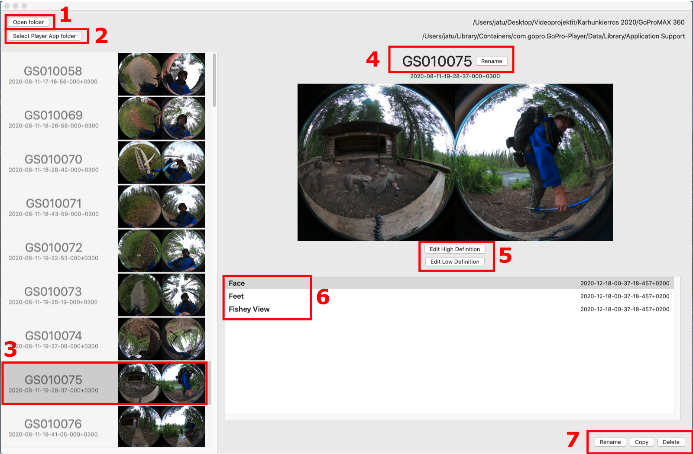
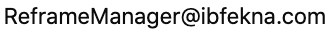

A Mac OSX application for managing reframings of GoPro MAX 360 degree video files. It can also be used with older Macs without HEVC support to reframe files first in low resolution, and then open the same reframing in high definition for exporting.
Maybe I'm an old fart, but I like to do my editing with mouse and big screen. I'm also a cheapskate, whose Macbook Air 2017 wasn't up to the task. Now it is.
The app is used in conjuction with GoPro Player app, which must be installed on the same computer.
I have no connections whatsoever to GoPro, and I made this helper application solely as an user of their products. Others might find it useful, but I take not any kind of responsibilty of possible loss of data, hardware or limb. Use at your own risk.
When you launch the Player, a message appears. Remember always close the Player completely before clicking the Player App has quit button.

Download the DMG file from link below. It is signed and notarized, so you should be able to install it also to newer Mac OSX versions. Just drag the app to Applications folder.
You can send mail to  But beware, I suck in mail management.
Best Regards, Janne Tuukkanen 2020